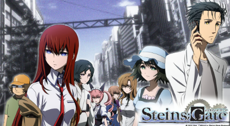

Mengenal anime Steins;Gate
Steins;Gate adalah sebuah anime sci-fi dengan membawa tema mesin waktu. Cara Steins;Gate membungkus tema mesin waktu sangatlah baik dan menarik. Drama yang disajikan antar karakter pun juga sangat menyentuh dan kompleks. Beberapa orang mengatakan bahwa anime ini memiliki alur yang sulit untuk diikut, tapi jika Anda memerhatikan setiap episode dengan seksama, maka Anda bisa memahami letak keindahan dari anime ini.
Untuk informasi lebih lanjut, kunjungi wiki Steins;Gate.
Karakter Penting dan Pengisi Suara
| Nama Karakter | Pengisi Suara (Jepang) |
|---|---|
| Rintarou Okabe | Mamoru Miyano |
| Kurisu Makise | Asami Imai |
| Mayuri Shiina | Kana Hanazawa |
| Itaru "Daru" Hashida | Tomokazu Seki |
| Suzuha Amane | Yukari Tamura |